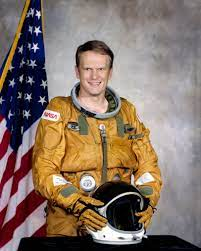
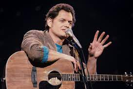
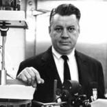
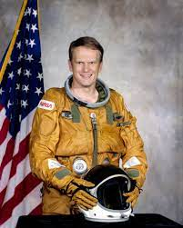
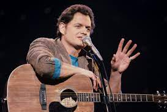
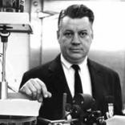

Alumni
| Alumni |
Description |
| Gary Ackerman, 1960 |
United States Representative for New York (1983-2013) |
| Warren Adler, 1945 |
American author, playwright, and poet. "The War of the Roses," "The Children of the Roses" |
| Karol Bobko, 1954 |
American aerospace engineer, former USAF and NASA astronaut |
| Cordell Cleare |
New York State Senator (2021 - Present) |
| Harry Chapin, 1960 |
American singer-songwriter, philanthropist, and hunger activist. "Cat's in the Cradle" |
| Elmer L. Gaden, 1940 |
Chemical engineer, "father of biochemical engineering" |
 




